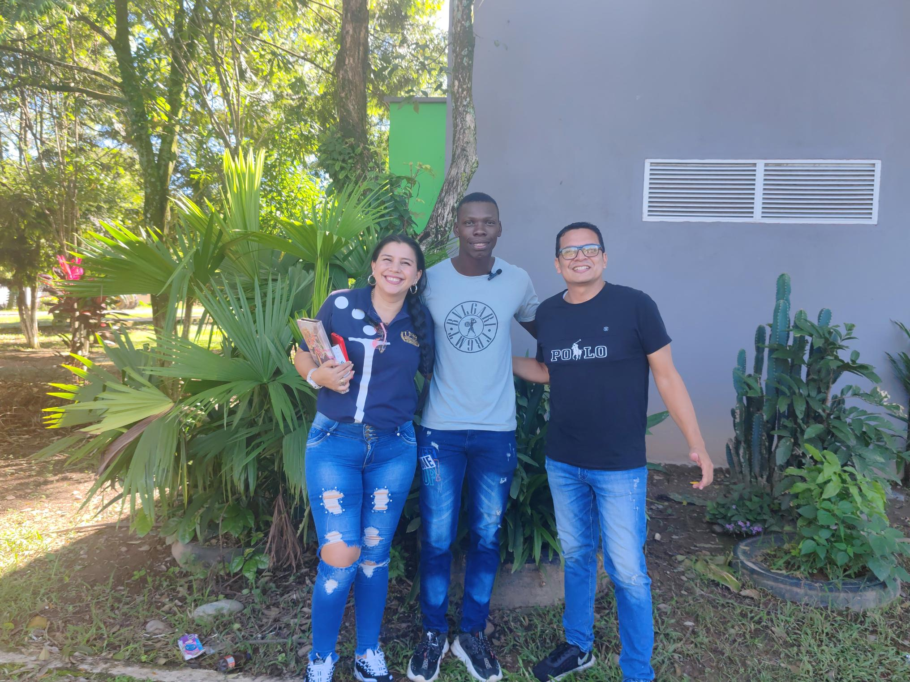
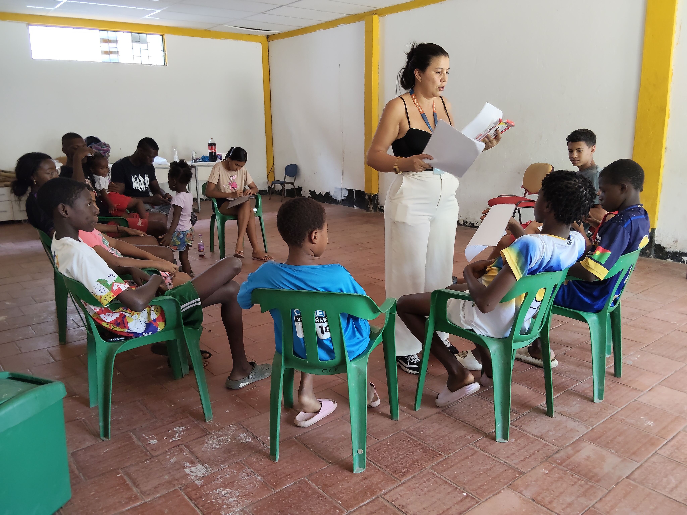
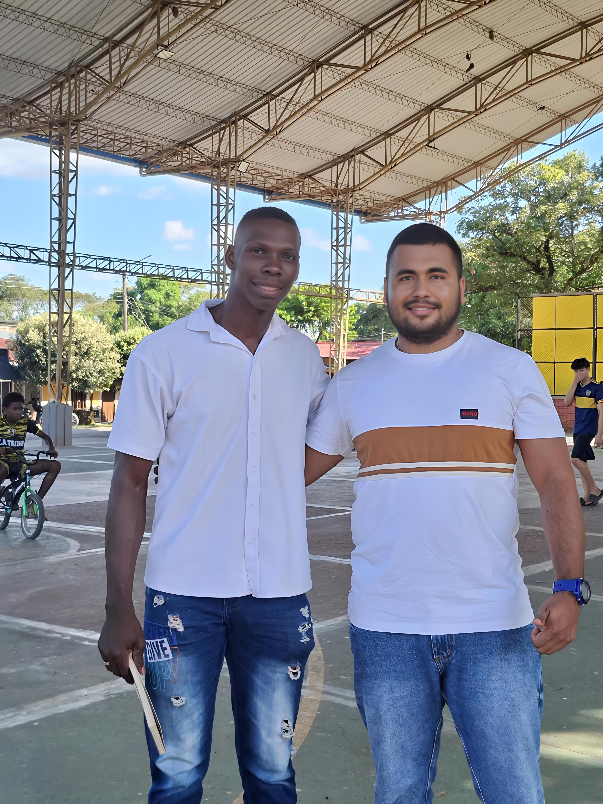
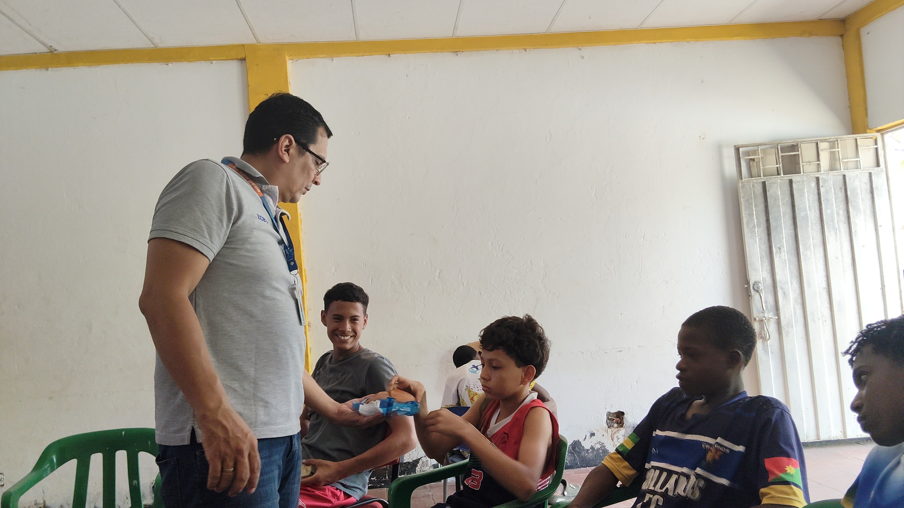

Misión
Desarrollar procesos de investigación formativa y transferencia de conocimiento que fortalezcan capacidades digitales y culturales en comunidades con patrimonio vivo.

El Semillero INTERMATSI articula investigación aplicada, formación académica y trabajo colaborativo con comunidades para responder a desafíos territoriales reales. Su enfoque promueve metodologías participativas, lectura de contextos culturales y apropiación tecnológica responsable, generando capacidades locales para documentar, analizar y proyectar la memoria social y cultural.
Desarrollar procesos de investigación formativa y transferencia de conocimiento que fortalezcan capacidades digitales y culturales en comunidades con patrimonio vivo.
Consolidarse como semillero líder en investigación social y tecnológica aplicada al territorio, generando soluciones inclusivas para preservar identidad, cultura y memoria comunitaria.
INTERMATSI aporta metodología investigativa, sistematización de experiencias y formación en herramientas digitales. Su trabajo mejora la calidad del archivo, produce contenidos de valor pedagógico y conecta academia con procesos comunitarios de Afrocrece Digital.


